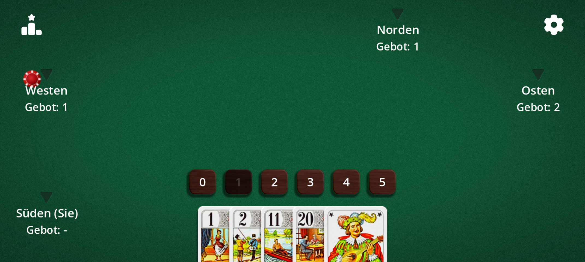
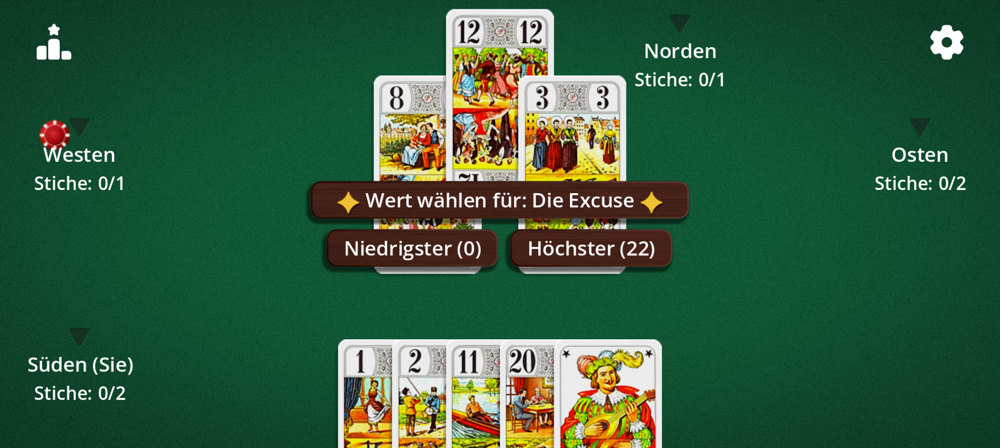
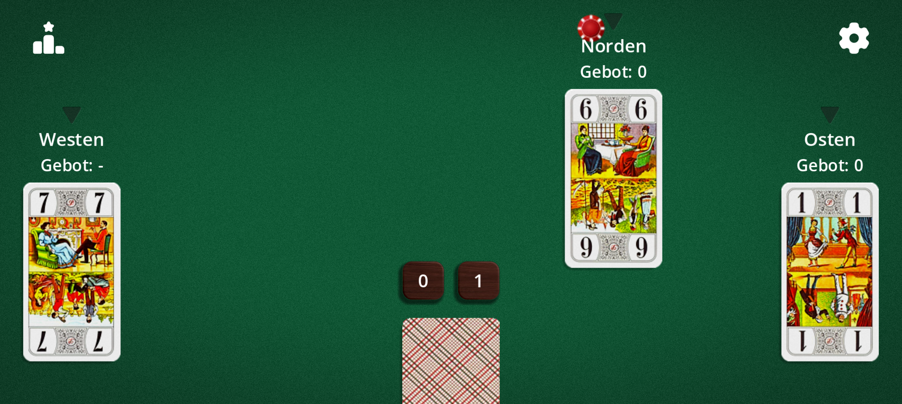

Ein Stichspiel, bei dem man nicht gewinnt, wenn man die meisten Stiche macht, sondern wenn man richtig vorhersagt. 22 Karten, 3 bis 5 Spieler, schnelle Partien.
Tarot Africain ist auch als Whist 22 bekannt. Es ist mit dem Ansagespiel „Oh Hell“ verwandt und wird mit den 22 Trümpfen des Tarots gespielt. Die Variante „Mexikanisch“ heißt auch Mexikanisches Tarot.
Die Karten
Tarot Africain wird mit nur 22 Karten gespielt: den 21 Trümpfen (1 bis 21) und der Excuse. Es gibt keine Farben: Nur der Wert der Karte entscheidet über den Stich.
Karte
Wert
Trümpfe 1 bis 21
Ihre eigene Zahl (21 ist die höchste, außer der Excuse)
Die Excuse
0 oder 22, nach Wahl des Spielers, der sie ausspielt
Die 1, die 21 und die Excuse gelten traditionell als die wertvollsten Karten: Spielen Sie sie im richtigen Moment und behalten Sie sie bei den Gegnern im Blick.
Spielziel
In jeder Runde sagen Sie an, wie viele Stiche Sie erwarten. Ihr Ziel: genau so viele zu gewinnen. Eine richtige Ansage schützt Sie; eine falsche kostet Leben, umso mehr, je größer die Abweichung.
Das Spiel endet, sobald nur noch ein Spieler Leben hat. Sie können auch eine begrenzte Anzahl an Runden festlegen.
Die Ansagen
Vor jeder Runde sagt jeder Spieler der Reihe nach eine Stichzahl von 0 bis 5 an. Passen ist nicht erlaubt.
Standardmäßig darf der letzte Ansager nicht die Zahl wählen, bei der die Summe aller Ansagen genau der Stichzahl entspricht: So gibt es immer mindestens einen Verlierer.

Ansage: Wählen Sie 0 bis 5 Stiche. Die verbotene Ansage ist ausgegraut.
Spielablauf
Spielen Sie, wenn Sie dran sind, eine beliebige Karte aus der Hand: Es gibt keinen Bedienzwang. Die höchste Karte gewinnt den Stich.
Die Zahl der ausgeteilten Karten sinkt von Runde zu Runde wie eine Treppe bis auf 1 Karte pro Spieler (5 Karten bei 4 Spielern, 6 bei 3, 4 bei 5).
Ein laufender Stich: „Stiche: 0/1“ heißt 0 gewonnen von 1 angesagt.
Die Excuse
Beim Ausspielen der Excuse entscheiden Sie sofort, ob sie 0 (die niedrigste) oder 22 (höher als die 21) zählt.

Beim Ausspielen der Excuse wählen Sie 0 oder 22.
Leben und Wertung
Jeder Spieler beginnt mit Leben, die das Ziel festlegt: 14 Leben bei „Vom König zum As“ (die Anzeige zeigt König, Dame, Cavall, Bube … bis zum As) oder 5, 10, 15, 20, 30 bzw. 50.
Die Rangliste zeigt die verbleibenden Leben nach jeder Runde. Bei 0 scheidet der Spieler aus.
Varianten
Alles lässt sich in den Optionen des Spiels einstellen:
Variante
Wirkung
Mexikanisch (Mexikanisches Tarot)
Runde mit 1 Karte: Ihre ist verdeckt, die der Gegner sind sichtbar.
Blind
Runde mit 1 Karte: keine Karte sichtbar, auch nicht Ihre.
Übertrumpfzwang
Wenn möglich eine höhere Karte als die im Stich spielen (außer der Excuse).
Doppel-20
Fallen 20 und 21 in denselben Stich, gewinnt die niedrigste Karte.
Excuse-Regel
Wechselnd (0 oder 22), immer null (verliert immer) oder Super 22 (schlägt die 21).
Excuse vor dem letzten Stich
Die Excuse muss vor dem letzten Stich gespielt werden.
Ohne Excuse
Partie mit 21 Karten.
Verbotene Ansage
Schaltet das Verbot für den letzten Spieler, die Summe auszugleichen, ein oder aus.
Ziel und Runden
Vom König zum As oder 5 bis 50 Punkte; unbegrenzt oder 1 bis 50 Runden.
Richtung und erster Ansager
Im oder gegen den Uhrzeigersinn; erster Ansager zufällig, zuletzt (leicht) oder zuerst (schwer).

Runde „Mexikanisch“: Sie sehen die Karten der anderen, nicht Ihre eigene.